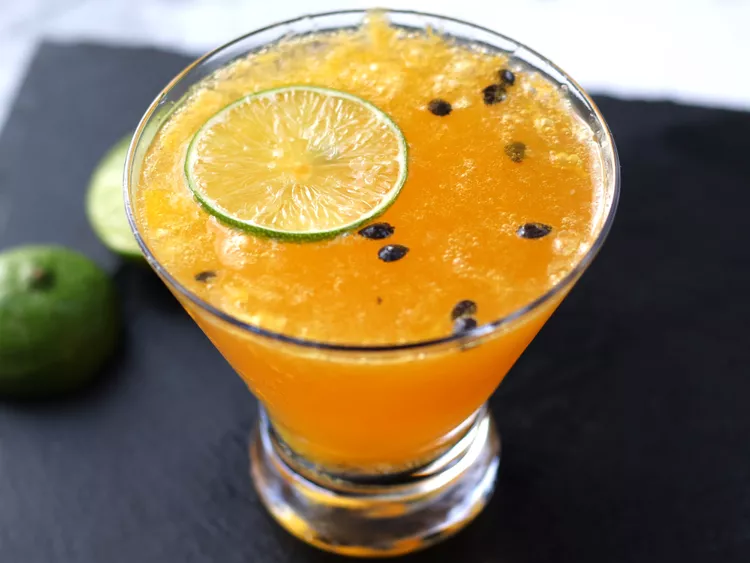

Home
Passion fruit fizz martini

This passion fruit fizz martini is a vibrant, effervescent cocktail that brings a taste of the tropics to your glass. You can find passionfruit pulp, with or without seeds, in the frozen aisle of most international markets.
Ingredients
- 1 1/2 fluid ounces vodka
- 1 fluid ounce frozen passion fruit pulp, with or without seeds, thawed
- 1 fluid ounce simple syrup
- 1/2 fluid ounce lime juice
- 1 cup ice
- 3 ounces chilled Champagne
Steps
-
In a cocktail shaker, combine vodka, passion fruit pulp, simple syrup, lime juice and ice. Shake well until the outside of the shaker is frosted, about 15 seconds.
-
Strain into a martini glass. Use a Hawthorne cocktail strainer to retain passion fruit seeds in the drink, or use a fine mesh strainer to strain out seeds. Top with chilled Champagne, and garnish with lime wheel.